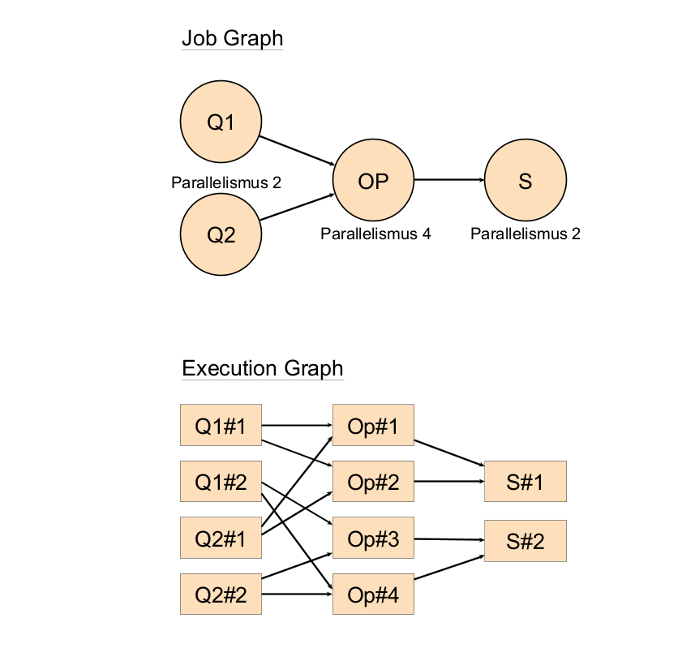
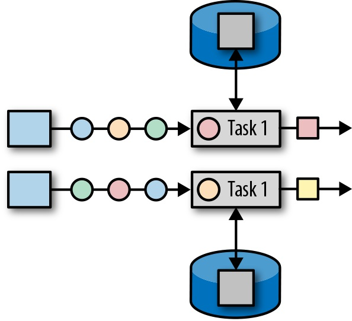

Die Architektur von Apache Flink
Die Architektur von Apache Flink
Komponenten eines Flink-Clusters
Es gibt 2 Hauptkomponenten im Cluster: JobManager und TaskManager
Nur 1 JobManager pro Cluster wird benötigt
Es kann beliebig viele TaskManager im Cluster geben
Ein JobManager hat folgende Komponenten:
1 ResourceManager
1 Dispatcher
0 oder mehr JobMaster
JobMaster
Kontrolliert die Ausführung eines einzelnen Jobs
Jedem laufenden Job ist genau ein JobMaster zugeordnet
ResourceManager und Dispatcher
ResourceManager
Zuständig für (De-)Allokierung und Provisioning von Ressourcen für alle Jobs
Verwaltet TaskManagers, kann neue erstellen oder vorhandene beenden
Für flexibles provisioning und recovery → availability
Dies ist nur in einem managed cluster möglich, nicht im standalone Cluster
Unterschiedliche Implementierung je nach Umgebung: standalone, Kubernetes, YARN etc.
Dispatcher
Nimmt Anfragen entgegen, neue Jobs zu starten
Ist über ein REST-Interface von außerhalb des Clusters aus ansprechbar
Verwaltet das Web-Interface (Dashboard)
TaskManager
Führt Tasks aus und leitet Daten (Streams) zwischen den Tasks weiter
Wird vom ResourceManager angesprochen, um für einen JobMaster Tasks auszuführen
Alle Tasks im TaskManager werden im selben JVM-Prozess ausgeführt
Hat eine begrenzte Anzahl von Task Slots (wird bei Erstellung des TaskManagers festgelegt)
Muss in standalone Clustern manuell erstellt werden
Komponenten (Diagramm)
Ausführen eines Jobs mit mehreren TaskManagern
High-Availability Mode
Ein Flink-Cluster kann bei Bedarf im high-availability mode gestartet werden
Hauptidee: mehrere JobManager starten
Es gibt dann einen Leader, der alleine alle Aufgaben erledigt
Der Rest ist in Standby
Bei Crash/Failure des Leaders wird ein neuer Leader unter den verbleibenden JobManagern gewählt
Es muss dafür ein High-Availability-Service angegeben sein
Zookeeper Quorum ist eine mit Flink mitgelieferte Möglichkeit
Auch über den managed YARN Cluster oder Kubernetes Cluster möglich
Managed Cluster können auch TaskManager automatisch (neu-)starten
Task Slots
Unterteilungseinheit für die Ressourcen eines TaskManagers
Jeder Slot in einem TaskManager erhält den gleichen Anteil von seinem Speicher
Es gibt keine CPU-Isolierung zwischen den Slots eines TaskManagers
Jeder aktive Task wird genau einem Slot zugeordnet
Tasks im gleichen Slot sind nur schwach voneinander isoliert
Zur Isolierung der Tasks kann die Anzahl der Slots eines TaskManagers auf 1 gesetzt werden (Tradeoff mit Performance)
Slot Sharing
Konfigurierbar, aktiviert per default
Wenn deaktiviert, dann kann ein Slot nur einen Task gleichzeitig enthalten
Wenn aktiviert, dann können dem gleichen Slot mehrere Tasks zugeordnet werden (task group)
Diese werden in einem Threadpool organisiert und können parallel ausgeführt werden
Regeln für die Zuordnung von Tasks zu Slots:
Tasks im gleichen Slot müssen zum gleichen Job gehören
Ein Slot darf nicht verschiedene parallele Instanzen des gleichen Operators enthalten
→ Somit benötigt ein Job zur Ausführung mindestens so viele Task Slots wie der maximale Parallelismus seiner Operatoren ( = Parallelismus des Jobs )
Slot Sharing (2)
Wenn Slot Sharing aktiviert ist, dann ist in der Regel die Anzahl der Slots für einen Job sogar gleich seinem Parallelismus
Die Slots enthalten dann jeweils einen kompletten parallelen Slice des Jobs
Somit leben Instanzen einer einzelnen parallelen Pipeline des Jobs immer auf der gleichen Node
→ Es müssen weniger Daten über das Netzwerk übertragen werden
Ohne Slot Sharing gibt es den Nachteil, dass alle Tasks die gleiche Menge an Ressourcen erhalten, auch wenn sie unterschiedlich viel benötigen
Somit erhalten ressourcenintensive Tasks weniger Ressourcen
Ohne Slot Sharing sind Tasks voneinander stärker isoliert
Nur 1 Slot pro TaskManager ohne Slot Sharing garantiert nur 1 Task pro TaskManager
Ausführen einer Flinkanwendung
Flinkanwendungen können während ihrer Ausführung einen oder mehrere Jobs zur Ausführung an einen Flink-Cluster übergeben
Vor Ausführung des Jobs ordnet der JobMaster dem JobGraph einen ExecutionGraph zu
Die Tasks im ExecutionGraph können dann geeignet auf verfügbare Task Slots verteilt werden
Wenn nicht genügend Slots zur Verfügung stehen, dann schlägt die Ausführung des Jobs fehl
Je nach Konfiguration kann der ResourceManager auch automatisch neue Slots provisionieren, indem neue TaskManager gestartet werden
Beispiel Ausführen eines Jobs : JobGraph und ExecutionGraph
Beispiel Job:
|  |
Beispiel Ausführen eines Jobs : Zuordnung auf Task Slots
Deployment Modes
Es gibt 2 mögliche Deployment Modes für Flink-Jobs:
Session Mode
Verwendet bereits existierenden Cluster zur Ausführung des Jobs
Anwendung wird im Client ausgeführt, um einen JobGraph zu erstellen, der dann an den Flink-Cluster geschickt wird
Ggf. werden vorher noch Dependencies im Client heruntergeladen
Application Mode
Erstellt für jede Anwendung einen neuen Flink Cluster
Anwendung wird vom JobManager serverseitig ausgeführt
Dependencies der Anwendung sind Teil des Clusters und müssen bei Neustart der Jobs nicht neu verteilt werden
Datentransfer zwischen Subtasks
Gegeben ein Subtask A eines Jobs, der seinen Output an einen Subtask B weiterleitet
Dann hat A für diesen Kanal eine Output Buffer Queue und B eine Input Buffer Queue
Wenn A und B vom gleichen TaskManager verwaltet werden, dann liegen die Buffer im gemeinsam genutzten Speicher
Andernfalls werden vom TaskManager verwaltete Netzwerkbuffer verwendet
Je 2 TaskManager erhalten eine ständige TCP-Verbindung, jede Remoteverbindung zwischen ihren Tasks erhält einen TCP-Kanal
Daten von allen Subtasks von 2 Tasks werden unter Verwendung von Multiplexing über den gleichen TCP-Kanal übertragen
Datentransfer zwischen Subtasks (Grafik)
Deployment von Subtasks
Die möglichen Lokalisierungen von verbundenen Subtasks eines Jobs in abnehmender Verbindungsgeschwindigkeit:
Im gleichen Task (verkettet)
In unterschiedlichen Tasks im gleichen TaskManager
In unterschiedlichen TaskManagern auf der gleichen Node
Auf unterschiedlichen Nodes
Abgesehen von der Verkettung, sind die anderen Möglichkeiten nicht direkt vom Entwickler einer Flink-Anwendung kontrollierbar
Die Zuordnung von Tasks auf TaskManager wird automatisch vom Scheduler des Flink-Clusters vorgenommen
Datentransfer: Credit-Based Flow Control
Jeder Subtask verwaltet einen Pool von Floating Buffers
Zusätzlich hat jede Input Buffer Queue dieses Subtasks auch noch exklusive Buffer
Die Floating Buffers können bei Bedarf in exklusive Buffer umgewandelt werden
Jeder Kanal zwischen 2 Subtasks hat eine Anzahl von Credits
entspricht der Anzahl der verfügbaren exklusiven Buffer der Queue des Empfängers
Ziel: Jeder Kanal soll nicht mehr oder weniger exklusive Buffer haben, als er momentan benötigt
→ die vorhandenen Ressourcen werden optimal genutzt
Datentransfer: Credit-Based Flow Control (2)

Credit-Based Flow Control:
Buffer werden nur verschickt, wenn der Kanal genug Credits aufweist
Ankommende Buffer reduzieren die Anzahl der Credits
Sender schicken Empfängern mit den Buffern auch die Anzahl der noch wartenden Buffer (Größe ihres Backlogs)
Nach Erhalt der Buffer fragt der Empfänger ggf. weitere Buffer aus dem Pool an, um die Credits an die Größe des Backlogs anzugleichen
Event-Time Verarbeitung : Watermark Propagation
Operatoren geben Watermarks von ihren Inputs an ihre Outputs weiter (propagation)
Ein Operator kann erst dann keine Ereignisse mit früherer event time als eine gegebene mehr erwarten, wenn dies für alle seine Inputs der Fall ist
Mechanismus für watermark propagation:
Jeder Operator speichert für jeden seiner Inputs einen Timestamp
Entspricht der letzten Watermark, die auf diesem Input angekommen ist
Zusätzlich hat der Operator selbst auch noch einen Timestamp
Entspricht dem Minimum der Timestamps seiner Inputs
Immer wenn sich der Timestamp des Operators erhöht, emittiert dieser in seinen Outputs eine Watermark mit diesem Timestamp
Event-Time Verarbeitung : Watermark Propagation (Grafik)

Event-Time Verarbeitung : Watermark Propagation mit Window Operators
Sonderregeln für event-time Window Operators:
Timestamp des Operators entscheidet, wann ein Window geschlossen wird
Watermarks werden nur bei Schließen des Windows zusammen mit dem Output emittiert
Event-Time Verarbeitung : Idle Stream Problem
Idle stream problem bei Watermark Propagation:
Wenn einer der Inputs eines Operators keine Aktivität hat:
Dann wird der Timestamp dieses Inputs nicht mehr erhöht
Daher wird auch der Timestamp des Operators nicht erhöht
→ Der Operator emittiert keine Watermarks mehr
→ Window Operator schließt seine Windows nicht
→ Pipeline ist lahmgelegt
Lösungen:
Partitionen besser balancieren, sodass keine leer oder dünn besetzt sind
Keep-alive events
Auf jedem Input regelmäßig spezielle Ereignisse schicken
Idleness detection
Flink kann konfiguriert werden, Inaktivität eines Inputs zu erkennen und dieses nicht mehr für die Timestamps zu berücksichtigen
Event-Time Verarbeitung : Watermark Alignment
Problemstellung:
event-time Window Operators, die einen Join von Inputs aus mehreren Quellen vornehmen, benötigen zeitlich auf einander abgestimmte Daten
Beispiel : zeitlich korrelierte Messdaten, korreliertes Benutzerverhalten
Wenn die Beschaffung oder Verarbeitung der Daten unterschiedlich lange dauert, können Daten mit ähnlicher event time, aber unterschiedlicher processing time ankommen
→ Windows verpassen Datensätze oder müssen sehr lange offen bleiben, um auf verspätete Datensätze zu warten
Ansatz Watermark Alignment:
Quellen können zu einer Gruppe gehören
Quellen in der gleichen Gruppe werden zeitlich aufeinander abgestimmt
"Schnellere" Quellen der Gruppe halten ggf. an, um auf "langsamere" zu warten
Event-Time Verarbeitung : Watermark Alignment (2)
Jede Gruppe speichert den bisher maximalen Timestamp von Watermarks aus ihren Quellen
Quellen der Gruppe pausieren, solange der Timestamp ihres nächsten Datensatzes größer als die Summe aus Timestamp der Gruppe plus einem gegebenen Maximalen Drift ist
Event-Time Verarbeitung : WatermarkStrategy
Watermarks werden in Flink über eine WatermarkStrategy konfiguriert
Jeder Operator kann eine Strategy definieren, bevorzugt sollten dies aber nur die Quellen sein
Diese besteht aus einem TimestampAssigner und einem WatermarkGenerator
TimestampAssigner ist optional, um Datensätzen Timestamps (neu) zuzuordnen
Timestamps sind in Flink Long-Zahlenwerte in Millisekunden-Genauigkeit
Am Anfang jedes Streams mit Watermarks kommt ein Watermark mit Timestamp Long.MIN_VALUE
Event-Time Verarbeitung : WatermarkGenerator
Patterns für WatermarkGenerators:
Ein Periodic WatermarkGenerator erstellt in gleichmäßigen zeitlichen Abständen Watermarks
die im Watermark verwendete Zeit kann z.B. auf dem zuletzt verarbeiteten Datensatz oder auf der aktuellen Systemzeit (processing time) basieren
Ein Punctuated WatermarkGenerator erstellt ein Watermark immer dann, wenn ein Datensatz verarbeitet wurde, der ein bestimmtes Kriterium erfüllt
erfordert, dass der Inputstream entsprechend markierte Datensätze enthält
Zustandshaltung in Flink
In Flink wird der State getrennt für jeden Operator verwaltet, um erhöhte Performance und Isolation zu gewährleisten
Jeglicher State eines Jobs ist assoziiert mit einem seiner Operatoren
Der State eines Jobs entspricht der Menge der States aller Operatoren
In Flink wird der State eines Jobs als Einheit betrachtet, der nur insgesamt gespeichert oder geladen werden kann.
Damit kann erreicht werden, dass die States aller Operatoren aufeinander abgestimmt (konsistent) bleiben
State Scopes
Es gibt 2 mögliche Scopes für State:
Operator State gehört zu einer parallelen Instanz des Operators (Subtask)
Keyed State gehört zu einem Key des Inputstreams des Operators
entspricht insgesamt einer Key-Value Map für diesen Operator
 |  |
Raw State und Managed State
State kann physisch in 2 Formen existieren (konfigurierbar) :
Raw State wird nur von den Tasks in ihren eigenen Datenstrukturen erhalten
beschränkte Recovery- und Scaling-Funktionen
Managed State (default) wird von der Flinklaufzeit verwaltet von einem TaskManager in speziellen Datenstrukturen gespeichert
empfohlen, da es Flink mehr Optimierungs- und Recoveryoptionen gibt
State Backends
Für die Speicherung von Managed State muss ein State Backend gewählt werden
Dies kann global für den Cluster oder individuell für einen Job konfiguriert werden
Per Default unterstützt Flink 2 Arten von Backends:
HashMapStateBackend
EmbeddedRocksDBStateBackend
State Backends (2)
HashMapStateBackend
Speichert State als Objekte im Java Heap (also im Arbeitsspeicher) des TaskManagers
Hohe Performance
Speicherplatz ist für die meisten Anwendungen ausreichend
EmbeddedRocksDBStateBackend
Speichert State serialisiert in einer RocksDB Datenbank in einem lokalen Verzeichnis im permanenten Speicher des TaskManagers
Etwas geringere Performance
Für sehr großen State geeignet
Geeignet für high availability, da inkrementelle Snapshots unterstützt werden
State Typen
Je nach Scope (Operator, Keyed) eines States sind unterschiedliche Typen auswählbar
Für Keyed State und Operator State:
List State : Liste von Werten des gleichen Typs
Nur für Keyed State:
Value State : einzelner Wert
Map State : Key-Value Map von Werten
AggregatingState und ReducingState :
Einzelner Wert
Hinzufügen von Datensätzen aktualisiert den State (Beispiel: Bilden einer Summe)
State Patterns
Zusätzlich werden folgende State Patterns von Flink unterstützt:
Broadcast State :
Alle Operatorinstanzen teilen sich den State (Keyed oder Operator Scope)
Ein Upstream Operator broadcasted den State an alle Instanzen seiner Downstream Operatoren
Es gibt keine Kommunikation zwischen den Tasks zum Abgleich des Broadcast States
Nur für In-Memory State Backend verfügbar
Union List State :
Wie List State, aber anderes Verhalten bei Scaling und Recovery (s.u.)
Sollte nicht für große States verwendet werden
Stateverteilung nach Operator Scaling
Operator Rescaling : Veränderung der Parallelität eines Operators
Für stateful Operatoren muss der State umverteilt werden
Wird in Flink von Savepoints unterstüzt
Zum Rescaling wird ein Savepoint erstellt und der Job einfach vom Savepoint aus mit veränderter Parallelität neu gestartet
Wie wird der State nach Rescaling auf die neuen Operatorinstanzen verteilt?
Bei Keyed State:
Die möglichen Keys werden auf die neuen Instanzen verteilt und der State jedes Keys kann der zugehörigen Instanz zugeordnet werden
Für verbesserte Effizienz fasst Flink die Keys zu Key Groups zusammen und verteilt eigentlich diese
Stateverteilung nach Operator Scaling : Keyed (Grafik)
Stateverteilung nach Operator Scaling (2)
Wie wird der State nach Rescaling auf die neuen Operatorinstanzen verteilt?
Bei Operator List State:
Die Einträge der Listen aller ehemaligen Instanzen werden gleichmäßig auf die neuen Instanzen verteilt
Dies impliziert, dass die Listeneinträge voneinander unabhängig und die Operatorinstanzen in ihrer Funktion nicht unterscheidbar sind
Bei Operator Union List State:
Jede Operatorinstanz erhält zunächst alle gespeicherten Listen
Daraufhin entscheidet jede Instanz, welche Teilmenge der Einträge sie behalten will
Hierfür sollten die Instanzen unterscheidbar sein bzw. verschiedene Rollen haben (z.B. individuelle Partitionierung)
Bei Operator Broadcast State:
Alle neuen Instanzen erhalten den (gleichen) State der alten Instanzen
Stateverteilung nach Operator Scaling : List (Grafik)
Stateverteilung nach Operator Scaling : Union (Grafik)
Stateverteilung nach Operator Scaling : Broadcast (Grafik)

(Bildquelle: "Stream Processing with Apache Flink" (F. Hueske, V. Kalavri), 1. Ed., 2019)
Checkpoints und Savepoints
Checkpoints
Flink kann in regelmäßigen Abständen den State eines Jobs in sog. Checkpoints persistieren
Es wird (per default) nur der eigentliche State der Operatoren, nicht der Inhalt von Buffern gespeichert
Dies sind (per default) in sich konsistente Abbilder des Zustands aller Operatoren im Job (self-consistent snapshot)
Recovery
im Fehlerfall wird der Job automatisch mit dem im letzten Checkpoint gespeicherten State neu gestartet
Savepoints
ein anderes Beispiel von self-consistent snapshots
werden nur auf manuellen Befehl hin angelegt oder geladen
Self-consistent Snapshot
Ein snapshot (Momentaufnahme) des States eines Jobs ist self-consistent, wenn folgende Bedingung erfüllt ist:
Es gibt einen Offset des Inputstreams, sodass gilt:
Jeder Operator hat alle Datensätze im Inputstream, und daraus generierte Datensätze, bis zu diesem Offset vollständig bearbeitetet
Kein Operator hat einen Datensatz des Inputstreams mit einem größeren Offset bearbeitet
Der Offset wird ebenfalls mit dem Snapshot gespeichert
Interne und End-To-End-Konsistenz
Interne Konsistenz:
Wie oft durchläuft jeder Inputdatensatz (und daraus generierte Datensätze) physisch den Jobgraphen?
Hierfür kann Flink starke Garantien bieten
End-To-End Konsistenz:
Wie oft werden die aus einem Inputdatensatz generierten Ergebnisse von den externen Senken tatsächlich verarbeitet?
Hierfür kann Flink nur starke Garantien bieten, falls das externe System kompatibel ist
Interne Konsistenz in Flink
Nach Laden eines Flink-Jobs mit einem self-consistent snapshot seines States zum Offset n:
die Verarbeitung beginnt bei einem Offset m > n
→ Es gibt keine falschen Ergebnisse durch nur teilweise verarbeitete Daten
→ Interne Konsistenz ist immer (mindestens) at-most-once
Ideale Wahl: m = n+1
→ Interne Konsistenz exactly once
Erfordert Zurückrollbarkeit der Quelle
End-To-End Konsistenz mit Flink
Zurückrollbare Quellen (at-least-once Semantik):
Beispiel : Datei (filepointer), Kafka Topic (partition offsets)
Gegenbeispiel : Netzwerksocket ohne Caching
Damit keine Ausgaben zweimal passieren (end-to-end at-most-once), muss auch der Outputstream der Senken effektiv zurückrollbar sein (schwierig)
Beispiel : Kafka Topic (mit transaktionalen commits)
Gegenbeispiel : jeder externe Konsument ohne spezielle dahingehende Funktionalität
→ Wenn beides gegeben ist, kann also mit Flink sogar end-to-end exactly-once garantiert werden
Checkpointing Algorithmus
Um einen Checkpoint zu erstellen, sollte nicht der gesamte Job angehalten werden müssen
Für einen Checkpoint werden an den Quellen spezielle Datensätze namens Barriers hinzugefügt, die ähnlich wie Watermarks keine Daten, sondern nur die ID des Checkpoints enthalten
Diese zeigen an, dass alle späteren Datensätze nicht mehr zu diesem Checkpoint gehören

Checkpointing Algorithmus (2)
Es gibt für jeden Job einen Checkpoint Coordinator als Teil des JobManagers
Checkpointing Algorithmus:
Barriers werden an den Quellen hinzugefügt
Sobald ein Operator Barriers von allen seinen Inputs erhalten hat, persistiert er seinen State und emittiert Barriers in seinen Outputs
Sobald eine Senke Barriers von allen ihren Inputs erhalten hat, meldet sie dies an den Checkpoint Coordinator
Wenn das für alle Senken im Job passiert ist, beschließt der Checkpoint Coordinator den Checkpoint
→ self-consistent snapshot zum letzten Offset vor der Barrier
Checkpointing Algorithmus : Aligned Checkpointing
Wenn ein Operator mehrere Inputs hat, dann muss er nach Erhalt einer Barrier auf einem Inputkanal die Verarbeitung auf diesem Kanal anhalten, bis er auch auf allen anderen Inputs Barriers erhalten hat
Da der gespeicherte State nur die Verarbeitung bis zu den Barriers repräsentieren soll
→ Die Inputs sind dann aufeinander abgestimmt (aligned)
Dies führt zu einem aligned checkpoint und ist das Defaultverhalten von Flink
Checkpoint Alghorithmus : Aligned Checkpointing (Grafik)
Checkpointing Algorithmus : Aligned Checkpointing (Nachteile)
aligned checkpoints sind oft eine sinnvolle Wahl, aber nicht immer
Mögliche Nachteile :
Blockieren der Operatoren lässt CPU-Ressourcen des Clusters ungenutzt und kann zu Latenzen führen
Erstellen eines Checkpoints kann sehr lange dauern
→ Seltenere Checkpoints
Eine Alternative sind unaligned checkpoints
Checkpointing Algorithmus : Unaligned Checkpointing
Für unaligned checkpoints wird nicht nur der State des Operators, sondern auch die Daten in seinen Buffern gespeichert (in-flight data)
Unaligned Checkpointing Algorithmus:
Wenn ein Operator das erste Mal auf einem seiner Inputbuffer eine Barrier erhält, dann:
Fügt er sofort eine Barrier ans Ende seiner Outputbuffer an
Persistiert er seinen State
Markiert er alle hinter der neuen Barrier liegenden Buffer zur Persistierung
Konsistenzgarantien sind die gleichen wie für aligned checkpoints
Checkpointing Algorithmus : Unaligned Checkpointing (Grafik)

Checkpointing Algorithmus : Aligned vs Unaligned Checkpointing
Vorteile von unaligned checkpoints:
Barriers erreichen Senken schneller
→ Häufigere Checkpoints möglich
Zeit für Checkpointing ist von der End-To-End-Latenz des Jobs unabhängig
Einschränkungen von unaligned checkpoints:
mehr IO nötig für Speichern der Buffer, größerer Speicherbedarf
Checkpointing ist nur dann schneller, wenn IO kein Bottleneck ist
Laden dauert länger und erfordert Wiederverarbeitung der gespeicherten Buffer
Laden von Watermarks ist leicht unterschiedlich
es können nicht mehrere Checkpoints gleichzeitig erstellt werden
Recovery von Checkpoints (Vorgang)

Für unaligned Checkpointing kommt noch der Schritt hinzu, die gespeicherten Buffer zu laden
Incremental Checkpointing
Idee von incremental checkpointing:
Nur die Veränderungen im Vergleich zum letzten Checkpoint speichern
Nicht alle State Backends unterstützen dieses Feature (per Default nur RockDB)
Vorteile:
Weniger Speicherbedarf bei großem State
Recovery kann schneller sein (weniger CPU- und IO-Ressourcen benötigt)
Nachteile:
Recovery kann auch länger dauern, da ggf. eine History von mehreren Checkpoints geladen werden muss (→ Netzwerklast)
RockDB verwendet Compaction, um inkrementelle Checkpoints zusammenzufassen und die Größe der History zu beschränken
Weitere Optionen für Checkpointing
at-least-once Checkpointing
Entspricht unaligned checkpointing ohne Speicherung der Buffer
→ Schnell, aber keine at-most-once Konsistenz
Interessant, falls sehr niedrige Latenzen wichtig sind
concurrent checkpointing
Es können mehrere Checkpoints gleichzeitig erstellt werden
Keine Probleme mit Konsistenz, allerdings kann es zu erhöhten Latenzen führen
Interessant, wenn aligned Checkpoints mit hoher Frequenz benötigt werden
externalized checkpoints
Checkpoints werden in externen Speicher persistiert
Ermöglicht es, Checkpoints zu erhalten, auch nachdem ein Job abgebrochen wurde
Jobs können dann manuell mit diesen Checkpointdaten neugestartet werden
Savepoints
Savepoints haben die Funktion eines Backups, um die Konsistenz eines Jobs nach geplanten Downtimes (Updates, Rescaling, Migration …) zu erhalten
Erstellen, Laden und Löschen muss manuell ausgelöst werden
Werden nach dem gleichen Algorithmus wie aligned Checkpoints erstellt
Enthalten zusätzliche Metainformationen
Portabler und flexibler als Checkpoints, dafür langsamer zu laden
Können mit veränderten Versionen des gleichen Jobs verwendet werden, solange die States kompatibel sind
Können nach Update von Flink oder Änderung des State Backends weiter verwendet werden